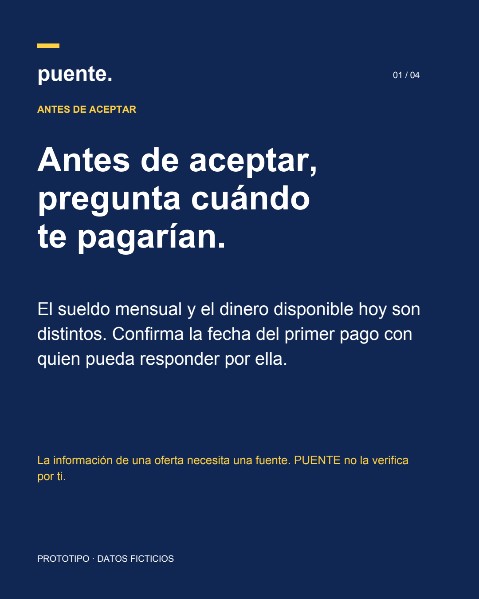
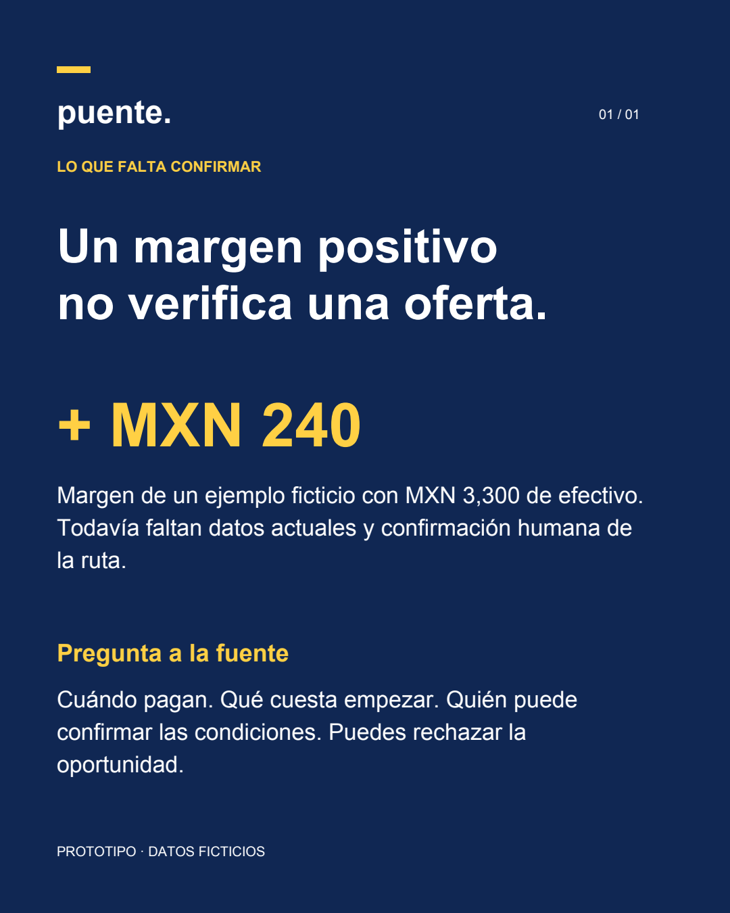

Antes de aceptar
CARRUSEL · 4 LÁMINAS
1 / 4
Descargar carrusel PDF
TRANSICIONES LABORALES · PROTOTIPO
Antes de cambiar de trabajo, revisa qué gastos tendrías que cubrir y qué información falta confirmar.
El demo usa datos ficticios y una cuenta de 14 días. No verifica ofertas ni garantiza ingresos.
En esta estimación faltan
MXN 1,260El ingreso conservado del ejemplo es MXN 0. Un sueldo futuro no se suma como dinero disponible.
DEL MÉTODO A UNA EXPLICACIÓN ÚTIL
Dos ejemplos calculados con el motor existente. Cambiar el efectivo no confirma que la oferta exista.
La reserva es el menor neto diario positivo del registro ficticio: MXN 210. Se aparta una sola vez.
Descargar entradas y resultadosCargando ejemplo…
—
La fecha del primer pago se confirma fuera del demo. Si llega después de 14 días, esta cuenta no cubre toda la espera.
TRES SERIES PARA EL MOMENTO DE DECIDIR
Materiales para revisar los gastos, reconocer lo que falta confirmar y conservar el control de tu decisión. Su comprensión con la audiencia todavía está por probarse.

 Descargar hoja PDF
Descargar hoja PDF
Descargar póster PDFPARA ORGANIZACIONES Y DEPENDENCIAS PÚBLICAS
Exploramos un piloto de acompañamiento, gratuito para el trabajador. Buscamos entender el problema que ya atiendes y si este servicio tendría valor para tu institución.
20 personas. Un mes.
Un punto de partida para discutir alcance, responsable operativo, apoyo y evaluación agregada. Son supuestos; no un programa aprobado.
MXN 2,800 antes de impuestos · ejemplo de cotización
Costo supuesto: MXN 2,240. El margen objetivo de 20% no es utilidad neta. Más tiempo de captación o apoyo cambia la cotización.
Antes de comprometer recursos, acuerden a quién atenderían, quién acompañaría al grupo, cuánto apoyo necesitaría y quién puede aprobar el presupuesto. La propuesta sirve para iniciar esa conversación.
ALCANCE Y LÍMITES
Dos ejemplos ficticios, el detalle de sus cuentas y las condiciones de un posible piloto institucional. El resultado deja visibles los gastos y la información faltante.
Todavía necesitamos probar la comprensión de los materiales con la audiencia y validar el alcance y el presupuesto con una institución. No hay financiamiento confirmado.
La publicación de esta página no demuestra resultados de empleo, ahorro ni una mejora de 10:1. No ingreses datos financieros reales en los ejemplos.